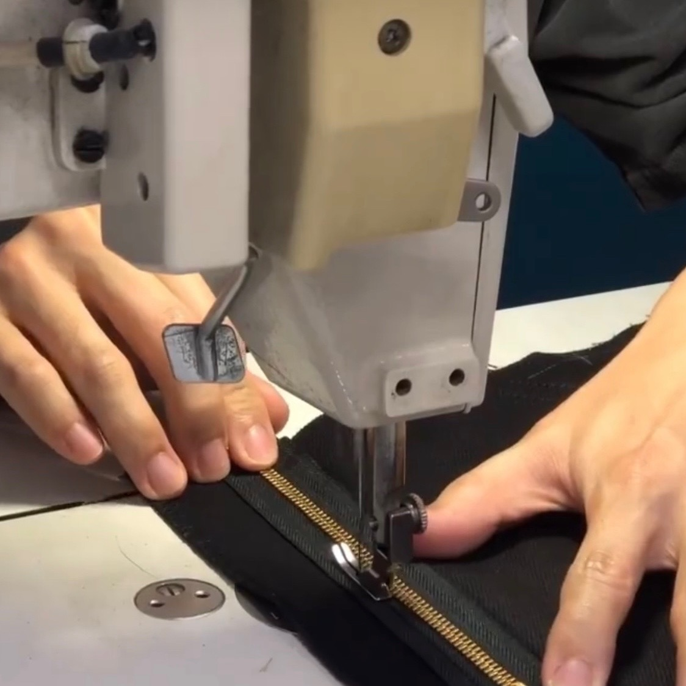

이력서
류기현KIHYUN RYU
주니어 프론트엔드 개발자
기본 정보
연락처
- 010-1234-5678
- khryu0610@gmail.com
- 대한민국, 서울
- My GitHub
사용 가능한 기술
- 프론트엔드
- JavaScript, React, HTML, CSS, Sass, Tailwind
- 협업
- Git, GitHub, Discord
학력
- 컴퓨터공학 학사
- Harvard University
- 2010 - 2014
내용
소개

‘입을 수 있는’ 바지 한 벌을 제작해봤습니다. 무언가를 만들어내는 것과는 거리가 있었던 저였지만, 전혀 새로운 분야에서 시작부터 완성까지의 과정을 경험해보고 싶었기 때문입니다.
데님 전문 작업장과 수선집을 돌아다니며 만난 이들에게선 공통적으로 기술에 대한 자긍심을 느낄 수 있었습니다. 저의 지향점 또한 같습니다. 제가 뛰어든 분야에 자긍심을 가질만큼 실력을 가다듬고자 합니다.
앞으로도 제가 잘 모르는 분야에 대해선 겸손하며 빠르게 흡수하여, '이용 가능한' 서비스를 구현하겠습니다.
프로젝트
경험
-
멋쟁이사자처럼 - 프론트엔드 개발자
2023.01. - 현재
- 서비스 개발팀 (2022.03. - 현재)
- 벤딩머신 프로젝트의 생산 속도 향상을 위해 Tailwind CSS를 사용하여 작업 시간을 30% 단축시켰습니다.
- 마케팅팀 (2022.01. - 2022.03.)
- 감귤마켓 프로젝트의 생산 속도 향상을 위해 Tailwind CSS를 사용하여 작업 시간을 30% 단축시켰습니다.
-
멋쟁이사자처럼 프론트엔드 스쿨
2022.09. - 2023.01.
- 서비스 개발팀 (2022.06. - 현재)
- 벤딩머신 프로젝트의 생산 속도 향상을 위해 Tailwind CSS를 사용하여 작업 시간을 30% 단축시켰습니다.
- 마케팅팀 (2022.03 - 2022.06)
- 감귤마켓 프로젝트의 생산 속도 향상을 위해 Tailwind CSS를 사용하여 작업 시간을 30% 단축시켰습니다.